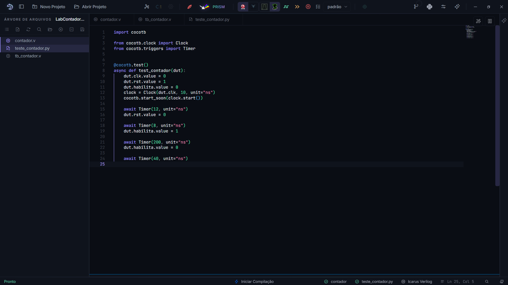
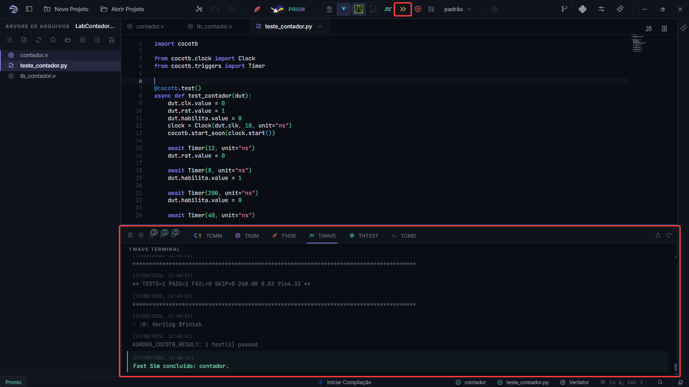

Testbenches: Verilog e cocotb¶
Um testbench é o programa que exercita o circuito na simulação: gera clock e reset, aplica estímulos, observa saídas e decide quando parar. Na AURORA ele pode ser escrito em Verilog ou em Python, com o cocotb. Este capítulo cobre os dois.
Anatomia de um testbench Verilog¶
O do tutorial serve de modelo:
Clock:
always #5 clk = ~clk;gera 100 MHz comtimescale 1ns/1ps.Reset: comece em 1 e solte fora da borda de clock, para o circuito nascer em estado conhecido.
Estímulos: um bloco
initialcom atrasos#sequenciando os eventos.Gravação:
$dumpfilee$dumpvarsescolhem o arquivo e os sinais gravados. Se o seu testbench já os traz, a AURORA os respeita; se não traz, ela os injeta com uma seleção padrão, e o modal Configuração de ondas permite refinar sem editar o arquivo.Término:
$finishencerra. Sem ele, a simulação corre até o limite e o visualizador abre com o que houver.
Dica
O testbench original nunca é modificado pela AURORA. Quando é preciso instrumentar (para injetar a gravação de ondas, por exemplo), uma cópia é gerada na área temporária e é ela que compila. O seu arquivo permanece como você escreveu.
A escolha entre os motores Icarus e Verilator, os visualizadores e a seleção de sinais estão no capítulo anterior, Formas de onda.
Testbench em Python: cocotb¶
Com o cocotb, o testbench é um módulo Python: o simulador roda o circuito e o Python dirige os sinais. A vantagem é usar a linguagem inteira na verificação, incluindo bibliotecas de análise.
Crie pelo menu de contexto da árvore: Novo testbench cocotb (.py). O modelo gerado já traz a estrutura:
Nota
Na primeira execução de um testbench cocotb o simulador precisa ser construído, e a AURORA gera um executável a partir do seu Verilog antes de rodar o Python. Isso leva alguns segundos e aparece no terminal TWAVE; da segunda vez em diante o executável é reaproveitado, e só é refeito quando o Verilog muda. Se o antivírus do Windows perguntar sobre esse executável recém-criado dentro da pasta do projeto, é ele.
1# aurora-toplevel: contador
2
3import cocotb
4from cocotb.clock import Clock
5from cocotb.triggers import Timer
6
7
8@cocotb.test()
9async def test_contador(dut):
10 dut.clk.value = 0
11 dut.rst.value = 1
12 dut.habilita.value = 0
13 clock = Clock(dut.clk, 10, unit="ns")
14 cocotb.start_soon(clock.start())
15
16 await Timer(12, unit="ns")
17 dut.rst.value = 0
18
19 await Timer(8, unit="ns")
20 dut.habilita.value = 1
21
22 await Timer(200, unit="ns")
23 dut.habilita.value = 0
24
25 await Timer(40, unit="ns")
{kind=link}

Figura 13 A primeira linha importa: o comentário # aurora-toplevel: contador diz qual módulo Verilog é o alvo do teste. Fora da AURORA a linha é um comentário inerte.¶
Marque o .py como Testbench Top e use os mesmos botões de sempre: Analisar Verilog roda os testes e abre a onda; Execução rápida roda sem gravar onda, ideal para o ciclo de ajuste.
{kind=link}

Figura 14 Na execução rápida, o veredito de cada teste sai no terminal TWAVE.¶
Três coisas que valem saber:
Nada de Makefile: a AURORA monta e executa o projeto cocotb sozinha, com o Python embarcado. Você escreve só as funções
@cocotb.test().Teste que falha não esconde a onda: se a simulação rodou e as asserções falharam, o erro aparece em vermelho e a forma de onda abre mesmo assim, porque é nela que se investiga.
Bibliotecas extras (pyuvm, extensões de barramento, análise de VCD) se instalam pelo painel Bibliotecas Python, descrito em Controle de versão, Python e configurações.
Verilog ou cocotb?¶
Para exercícios curtos e primeiros contatos, o testbench Verilog é mais direto: tudo em um arquivo, sem camadas. O cocotb compensa quando a verificação cresce: laços de referência em Python, comparação com modelos, geração de estímulos complexos. Os dois convivem no mesmo projeto; o Testbench Top decide qual roda.